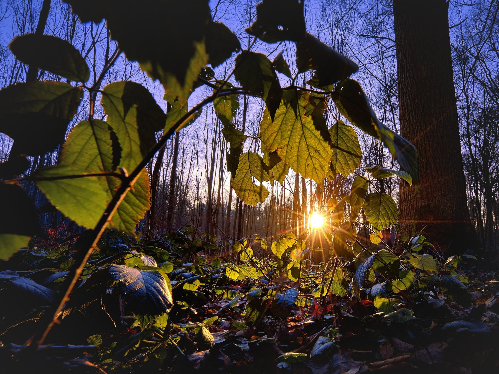
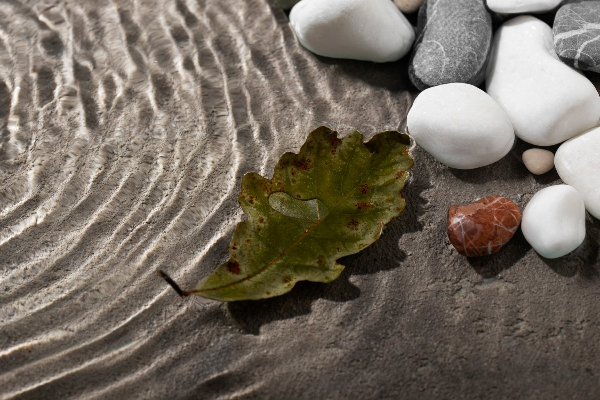

Nature therapy
Slow down. Look up. Breathe.
Ecotherapy, forest bathing and shinrin-yoku all describe engaging with nature to promote wellness.
Mindfulness, made easy
Let nature be the focus
In a busy life it can feel impossible to quiet the mind. By turning toward the song of the birds, the smell of pine or flowers, the warmth of the sun and a gentle breeze, the brain gets room to slow, focus and appreciate the present.
- Strengthens the immune system
- Lowers heart rate, blood pressure and blood sugar
- Decreases stress, anxiety and depression
- Improves attention and cognition
- Fosters a sense of well-being

0minutes a week
Your nature dose
Two hours, in sessions of 20+ minutes
Studies point to 120 minutes per week, in intervals of at least 20 minutes, as the optimal dose.
Track it with NatureDose
Bring nature into your care
Ask how nature therapy can complement your treatment.